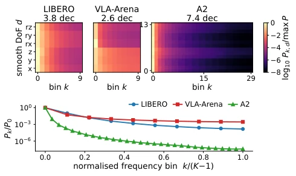
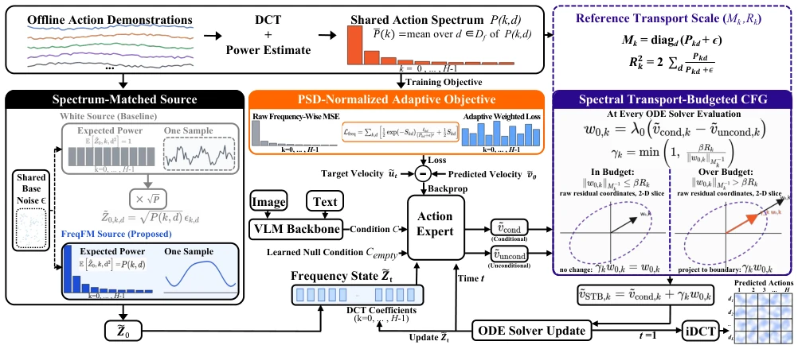
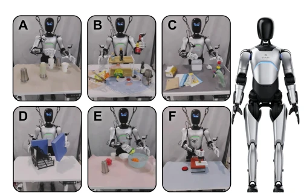

This paper conducts a "frequency sweep" for action generation in VLA models. The authors keenly point out that robot actions are essentially signals with extremely uneven spectral distribution, where low frequencies dominate global trends and high frequencies handle fine-tuning, but existing Flow Matching models are like nearsighted people without glasses, busying themselves blindly in the time domain, completely ignoring this spectral heterogeneity. FreqFM turns frequency from an implicit attribute into an explicit condition; this move is indeed clever, equivalent to equipping the model with a spectrum analyzer. However, the authors also honestly admit that this "one-size-fits-all" strategy relying on fixed spectra from the training set becomes a shortcoming when facing tasks where action statistical distributions deviate severely from the training set (such as the Extrapolation category in VLA-Arena), leading to performance regression. This is like installing shock absorbers of the same frequency for all cars; going over bumps is comfortable, but going over potholes might be jarring. Overall, the idea is clear and the effect is significant, but the cost of generalization is not small, belonging to the typical case of "running very fast on a specific track, but off-road capability is questionable".
Existing Flow Matching-based VLA models (such as π0, π0.5) typically model directly under time-domain coordinates when generating robot actions, treating actions as simple vector sequences. However, robot actions are time-correlated trajectories, whose frequency components encode motion information at different scales: low frequencies capture global trends, and high frequencies encode local corrections. The paper points out that in real robot data, energy is distributed extremely unevenly across different frequency components, spanning 7 orders of magnitude, with 99.9% of energy concentrated in the lowest three frequency components (Figure 1). This high degree of spectral heterogeneity means that existing time-domain modeling methods cannot explicitly utilize this structure, making it difficult for the model to efficiently learn motion features at different scales. Although studies like FAST involve frequency, they are mainly used for tokenization or consistency constraints, and do not treat frequency as an explicit condition dimension throughout the entire Flow Matching process. Furthermore, standard CFG uses a single coefficient in the time domain, ignoring the fact that energy differences between different frequency components are huge, leading to high-frequency fine-tuning signals being drowned out or overly amplified by low-frequency dominant signals. Therefore, there is an urgent need for a Flow Matching framework that can explicitly model and utilize action spectral heterogeneity.

Figure 1: Measured action power spectra. Top: log10 Pk,d per bin k and smooth dimension d, normalized by the corpus maximum; headers give the dynamic range in decades. Bot- tom: the aggregate Pk, normalized by P0. Horizon H = 10 for LIBERO and VLA-Arena, 30 for A2.
The core idea of FreqFM is to map action generation from the time domain to the frequency domain (DCT coordinates) and treat frequency as an explicit condition throughout the three stages of Flow Matching. The overall Pipeline is as follows: First, perform DCT transformation on offline trained action blocks to extract the shared action spectrum P(k,d); Subsequently, use this spectrum to guide source distribution construction, training objective optimization, and CFG guidance during inference respectively. Specific innovations include: 1. Spectrum-Matched Source: Abandoning the standard isotropic Gaussian source, performing frequency-weighted scaling on the source distribution according to the training data spectrum P(k,d), so that the source distribution and target trajectory have the same spectral structure, thereby reducing source-target covariance mismatch and maintaining stability of the relative second-order moment spectrum on the reference path. 2. PSD-Normalized Adaptive Objective: In the frequency domain, energy differences between different frequency components are huge. FreqFM first normalizes the regression error by Power Spectral Density (PSD) to eliminate energy scale effects, then adopts a likelihood-based multi-task learning weight mechanism, allowing the model to adaptively learn loss weights for each frequency component, avoiding low-frequency components dominating the gradient. 3. Spectral Transport-Budgeted CFG: During the inference stage, define a spectrum-based reference transport scale, projecting the CFG residuals into a "budget ball" with this scale as the radius. This means the allowed residual range for high-frequency (low energy) components is smaller, and the allowed range for low-frequency (high energy) components is larger, thereby achieving uniform guidance budget under normalized units and avoiding high-frequency noise being overly amplified. This method requires no modification to the VLA backbone network and can be directly inserted into existing Flow Matching action experts.

Figure 2: Overview of FreqFM. Offline, a DCT of the training action chunks yields the shared action spectrum Pk,d, which conditions all three stages. Source: the white Gaussian source is rescaled frequency-wise to ˜z0,k,d = p
The paper was evaluated on three simulation benchmarks (LIBERO, LIBERO-Plus, VLA-Arena) and six real-world tasks on the AgiBot A2 humanoid robot. Baselines include time-domain Flow Matching versions of π0 and π0.5. Results show that FreqFM outperforms baselines on all simulation benchmarks, with the largest improvement on LIBERO-Plus, reaching +5.5 and +9.3 percentage points respectively, especially showing significant performance under perturbations such as Camera, Robot, Noise, etc. On VLA-Arena, total success rate improved by +2.6 and +4.2, but a slight decline appeared in the Extrapolation category, confirming the limitations of fixed spectrum priors. In real robot experiments, FreqFM showed significant improvement on tasks requiring fine position alignment (such as stacking cups, inserting folders) (+13.3~23.3 points), while improvement was smaller on loose tasks. Ablation studies indicate that the spectrum-matched source distribution contributes the most (LIBERO-Plus drops 4.2 points after removal), while the transport budget mainly improves trajectory smoothness (Jerk reduced by 56%).

Figure 3: Real-robot task suite and the AgiBot Expedition A2 platform (right). (A) Cup Stacking, (B) Kitchen Tidy, (C) Table Cleanup, (D) Folder Filing, (E) Toy Storage, (F) Stamp & Handover.